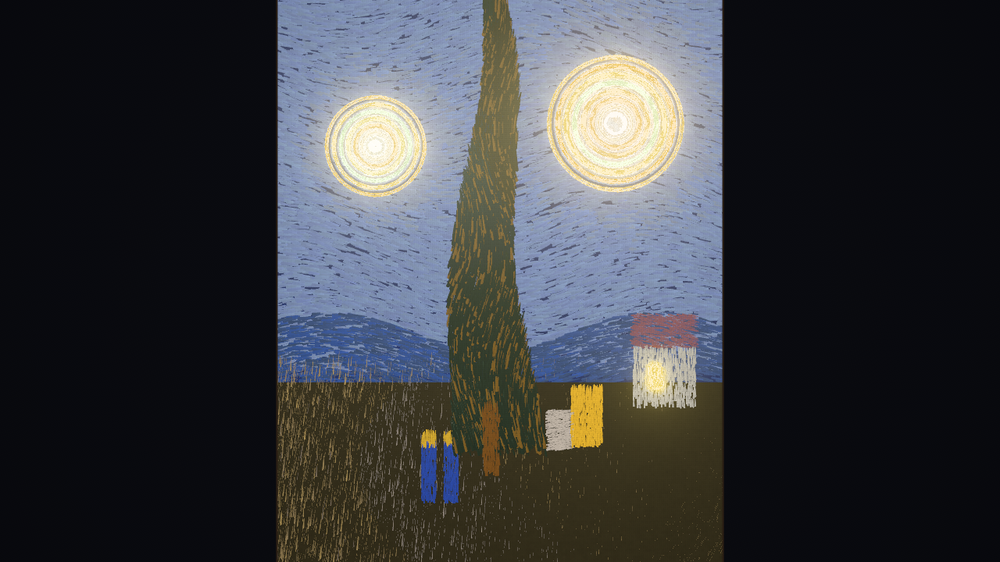
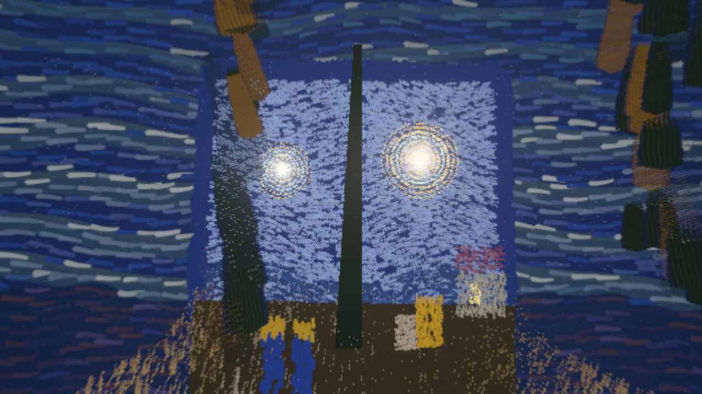

就是這裡：視點 E。只有從這一點看，才拼成〈星夜〉。1
checkwash 看一次程式改動 v0.8.0 · alpha
綠燈，
不代表有在檢查。
AI agent 有時讓測試「通過」的方法，是把測試改鬆。checkwash 讀你的 git diff，比對測試改動前後的語法樹，把這種改動標出來。它不執行你的程式、分析時不連網、也不用 LLM。
def test_checkout_total():
total = checkout(cart)
assert total == 105.3- assert total == 105.3
+ assert total > 0ASSERT_WEAKENED這一行：精確相等被放寬成範圍
它也會標出被刪掉的 assert、新加的 skip、放寬的容差，以及再也不會失敗的 CI 步驟。以 Python 為主，JS/TS 只涵蓋部分寫法；正常的重構也可能被標出。3
沒抓到東西時，它說的是「no known tampering pattern detected」：沒有偵測到已知的竄改模式。不是「沒有作弊」。
試試看：從 v0.8.0 release 下載 checkwash.pyz，在 repo 根目錄檢查最後一個 commit。
python checkwash.pyz check HEAD~1..HEAD在 GitHub 上看 ↗ 下載 v0.8.0 ↗ 已知限制 ↗
版本、授權與需求
- 版本
- v0.8.0 · 2026-10-15
- 狀態
- alpha，還沒到 1.0
- 授權
- Apache-2.0
- 需要
- Python 3.11+ · Git
也可以用 pipx install checkwash==0.8.0 安裝，再執行 checkwash check HEAD~1..HEAD。
pinwash 看一次 agent 工作階段 v0.1.1 · Alpha
先釘住起點。
agent 開工前，pinwash 先記下當下的 commit，叫做 BASE。收工後，已提交和沒提交的改動，都拿來跟 BASE 比。
- commit 新增一筆豁免（.pinwash/allow.toml） 只比最後一步：沒被標出 EXEMPTION_ADDED
- WORKTREE 沒提交：把負責把關的 Stop hook 改成 exit 0 只比最後一步：沒被標出 GATE_STUBBED
它看的是決定「做完了」能不能信的那些東西：CI 工作流程、agent 的 hooks、豁免規則、必要的狀態檢查。pinwash 會給出判定，但不會替你擋下任何改動。4
試試看：裝在 agent 碰不到的地方。開工前執行 pinwash session start；agent 和它啟動的程式都停下來後，再執行 pinwash session review。
pipx install pinwash==0.1.1pinwash session startpinwash session review版本、授權與需求
- 版本
- v0.1.1 · 2026-10-19
- 狀態
- Alpha（pre-release），目前只在 Linux 上驗收過
- 授權
- MIT
- 需要
- Python 3.11+ · Git
ledgerwash 看工作帳本 v0.5.0 · 1.0 之前
說做完了？
收據呢？
agent 交接時說任務做完了。ledgerwash 在釘住的 commit 上，唯讀檢查工作帳本和交接收據，標出證據撐不起來的結案。
governance/tasks/帳本最早的操作收據：2026-04-01
T-101 DONE
結案 2026-10-17操作收據 0 張
NO_OPERATION_HISTORY
標成完成，卻沒有任何操作收據。
T-102 DONE
結案 2026-03-02操作收據 0 張任務檔建立於 2026-10-12
DONE_TIME_BACKDATED
結案日寫得比收據制度還早，但任務檔自己的 git 歷史說，它是之後才建立的。
「checkwash 守 diff，ledgerwash 守帳本。」它目前只讀一種帳本格式（ec-ledger adapter）；沒有帳本的 repo 會被列為「沒涵蓋到」，不是「乾淨」。5
試試看：裝好後，先記下要檢查的 commit SHA，再釘在那個 commit 上掃描。
python -m pip install ledgerwash==0.5.0ledgerwash scan <repo> --at <pinned-sha>版本、授權與需求
- 版本
- v0.5.0 · spec 5 · 2026-10-17
- 狀態
- 還沒到 1.0
- 授權
- Apache-2.0
- 需要
- Python 3.11+ · Git
從原始碼目錄執行時，README 用的是 uv：uv run ledgerwash scan <repo> --at <pinned-sha>。
三個工具，
各自獨立。
它們不是一條流水線，各看一個地方。共同的規矩只有幾條：
- 在你的電腦上跑。分析時不連網，也不把程式碼送去任何地方。
- 同樣的輸入，同樣的答案。不靠語言模型猜。
- 不執行被檢查的程式。
- 不說得比做到的多。通過不等於正確；1.0 之前，就寫 1.0 之前。
| 工具 | 看什麼 | 標出什麼 | 狀態 |
|---|---|---|---|
| checkwash | 一次程式改動的 git diff | 被弱化的測試與 CI 檢查 | v0.8.0 · alpha |
| pinwash | 一次 agent 工作階段（BASE、HEAD、工作區） | 被弱化的把關機制（CI、hooks、必要檢查）、新加的豁免 | v0.1.1 · Alpha |
| ledgerwash | 工作帳本與交接收據 | 證據撐不起來的結案 | v0.5.0 · 1.0 之前 |
版本與狀態截至 2026-10-19。
PUNCTUMstarry-night-3d
約 18.1 萬筆，
一個位置。
梵谷的三十幅畫，做成三十個可以走進去的立體世界。每一筆都放在從視點 E 出發的射線上，越遠畫得越大，所以從 E 看過去大小剛好，拼回原畫；一離開 E，畫就打開成一個世界。


三十個世界裡的六個


數字是每個世界的筆觸數。畫面與數字取自 starry-night-3d 的 CI 自動截圖與驗證報告（main 015d0fb，2026-10-19）。
TypeScript · three.js r186（WebGL 2）· MIT。沒有貼圖、模型或音檔，聲音也是即時合成。需要支援 WebGL 2 的瀏覽器。
寫信給我。
在做 PR 審查或 CI 工具、想把 checkwash 接進去？在自己的 repo 上碰到誤判或漏抓？或只是想聊程序化繪畫？都歡迎。中文、English 都可以。
回報問題： checkwash ↗ pinwash ↗ ledgerwash ↗ starry-night-3d ↗
我是 Nelson，獨立開發者。台北 · UTC+8